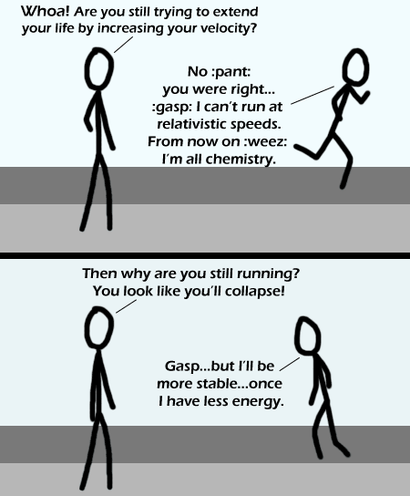

Comic JK 302
When I Feel Like It
⇤
<
?
>
⇥

⇤
<
?
>
⇥
Forum
.
RSS
.
Digg
.
Facebook
.
Reddit
.
Twitter
.
Stumbleupon
Enter your thoughts on number 302 here. Please, no spamming, trolling, or phreaking. Your mother is trying to extend her life by banging dorky college boys at relativistic speeds. Will someone explain to him that being dead is a more stable state than being alive? Hence to stay alive one should constantly be striving to have *more* energy and be at a less stable state >That would involve continuous gorging on snack cakes, would it not? I'm game. >>Unfortunately, excess energy can result in normally unfavored side reactions.... >>>so reality wins again, I see... >>>>Running to exhaustion IS good for your health. So he will live longer than the skeptic, though not for the reasons he thinks. Right... Chemistry.... the part of physics that sucks so terribly hard that they outsourced it xD >+1 and i thik it would take alot of running to make him stable enough for general consumption.